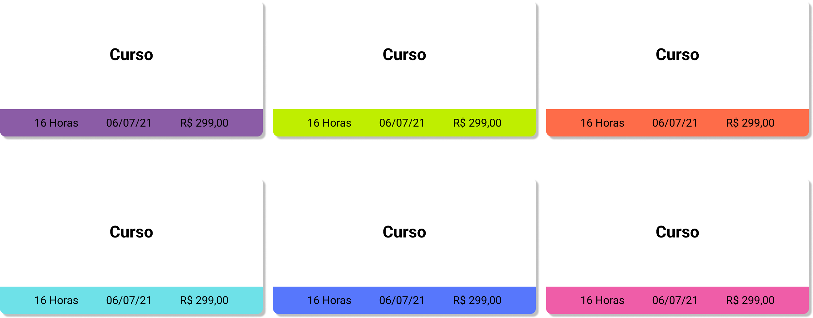
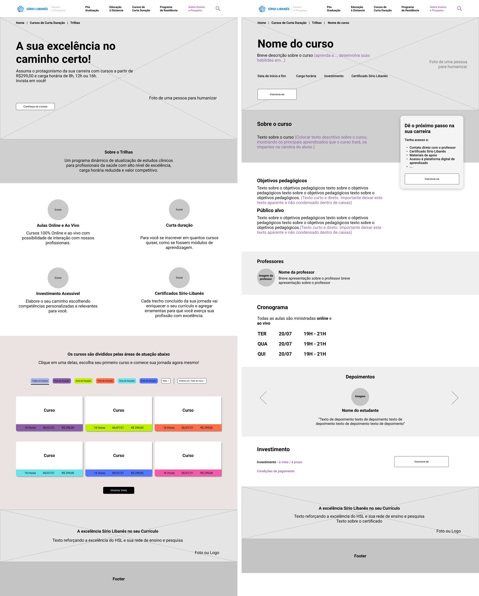
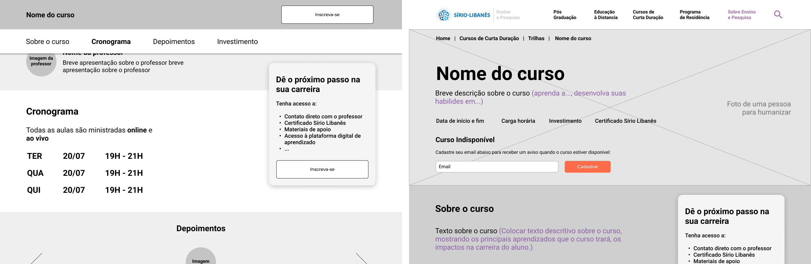

Pesquisa
Foi feita uma pesquisa inicial para compreender melhor o cenário de cursos com conceitos semelhantes. Os sites da Rock Content, FGV, Faculdade Unimed e NN/g foram analisados e destacados seus pontos positivos. Também foram feitas observações sobre o conceito do projeto Trilhas e como isso refletia no produto.
Análise e Sugestões
A partir da pesquisa inicial fizemos uma análise de usabilidade do site atual do Trilhas, para isso foi utilizado como base as heurísticas de Nielsen. Observamos que duas heurísticas tinham grande impacto na usabilidade e por isso foram escolhidas para seguir como base da análise, destacando os pontos negativos que poderiam atrapalhar a experiência do usuário e sugestões do que poderia ser feito para melhorar.

Foi apresentado também uma análise da jornada do usuário.
Solução
A partir da análise feita, levamos os pontos considerados para melhorar a experiencia do usuário. No hero, fizemos as seguintes alterações: foto de uma pessoa como imagem de fundo, frase de impacto e proposta de valor logo abaixo da frase.
Adicionamos mais uma seção, observamos que não existia nenhum conteúdo explicando o que era o Trilhas, por isso fizemos uma seção com uma explicação sucinta sobre o produto.
Mantivemos a seção com os diferenciais do produto.
Na seção de cursos adicionamos um filtro para facilitar a encontrabilidade dos cursos e reduzindo a jornada do usuário para encontrar algo que deseja. Apresentamos dois modelos que funcionam bem, o primeiro utilizando cores como recurso de tags e no outro modelo com caixas seletoras. Um botão para mostrar mais cursos foi adicionado no fim da seção.
Os cards dos cursos sofreram mudanças, usamos cores como um recurso para diferenciar entre as áreas de conhecimento, apresentamos as principais informações na barra inferior e adicionamos um espaço para a capa do curso junto ao nome.
A última seção tem como objetivo reforçar a excelência do Hospital Sírio-Libanês e sua rede de ensino e pesquisa.
Proposta Final
A tela da esquerda é a página inicial e a da direita é a página do curso.
A tela da esquerda exibe o comportamento do site durante a rolagem. A tela da direita exibe como deve ser caso o curso nao esteja disponível.
